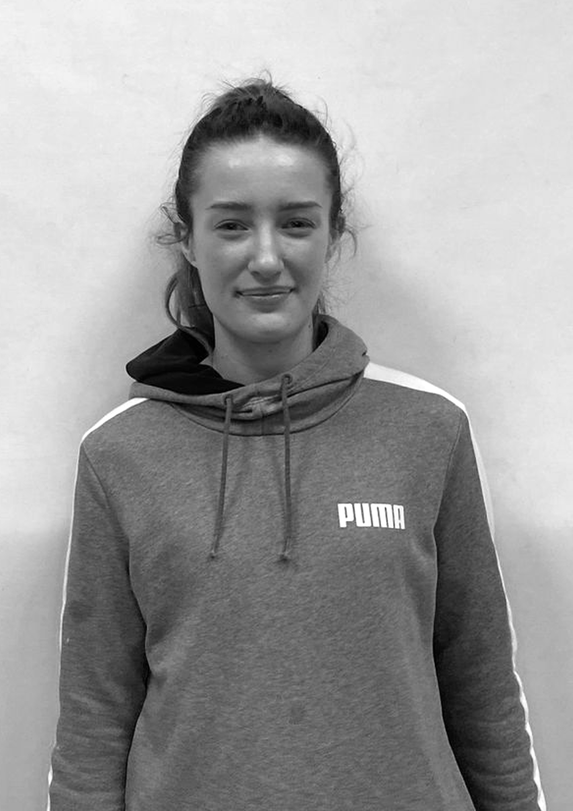
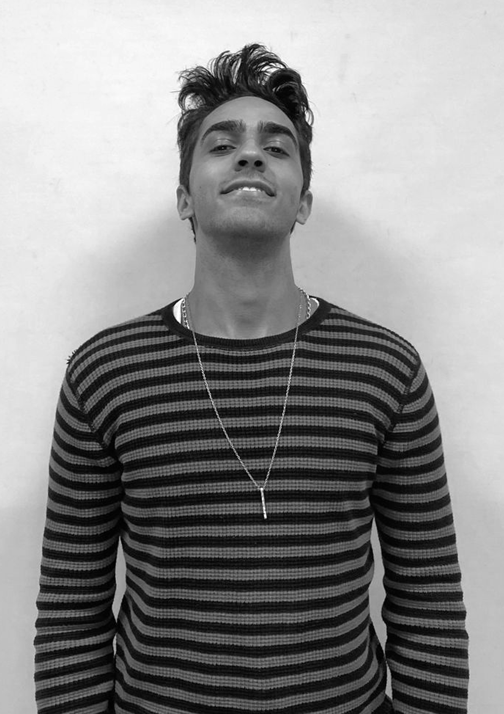

Laboratório 2 - Imagem e Captura de Vídeo
Apresentação do Site
A seguir, tem-se o vídeo de apresentação da página gravado na câmera profissional, apresentado, respectivamente, nas resoluções 100%, 50% e 25%. A mudança de resolução foi feita utilizando o Adobe Premiere.
Por sua vez, tem-se o vídeo de apresentação gravado pelo celular, também apresentado nas resoluções 100%, 50% e 25%.
Fotos com a câmera profissional
As fotos a seguir foram tiradas com a câmera profissional, e suas versões em preto e branco foram geradas diretamente via CSS, utilizando o código:
.black-white {
-webkit-filter: grayscale(100%);
filter: grayscale(100%);
}
Fotos com o celular e montagem com ícone-avatar
A seguir são apresentadas as montagens elaboradas com o Photoshop, e utilizando as fotos tiradas pelo celular e os ícones-avatares escolhidos. Também tem-se a versão em preto e branco destas imagens, obtidas também via CSS.
Mudança de resolução na foto do grupo
A seguir foi utilizada a foto do grupo, capturada com a câmera profissional, para verificar o efeito da mudança de resolução. A imagem original foi alterada posteriormente e está apresentada nas resoluções 100%, 50% e 25%:
Fotos em preto e branco tiradas com o celular
Essas fotos foram tiradas com o celular e o preto e branco foi feito pelo photoshop




Foto com resolução 50%
Essa foto foi tirada com uma camera profissional e qualidade foi reduzida posteriormente

Foto com resolução 25%
Essa foto foi tirada com uma camera profissional e qualidade foi reduzida posteriormente

Vídeo Lento
Comando Utilizado:
ffmpeg -i video-lento.mp4 -vf "scale=iw/2:ih/2" output2.mp4
Vídeo Rápido
Comando Utilizado:
ffmpeg -i video-rapido.mp4 -vf "scale=iw/4:ih/4" output4.mp4